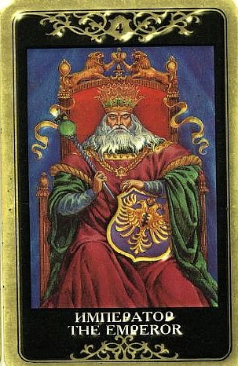

Император - это структурообразующий элемент, он символизирует наше стремление к стабильности, безопасности и последовательности, и он их приносит – повсюду и во всех смыслах.
Традиционное значение Четвертого Аркана: стабильность, надежность, покровительство, помощь, содействие росту и реализация планов.

Защита достигнутого, установление границ, принятие большой ответственности. Четкие, ясные, полезные и эффективные действия, рассудительность, близость к реальности.
Присутствие этой карты в раскладе сразу добавляет делу прочности и постоянства.
Но это еще не все – в ведении Императора находятся такие значения как влиятельность, авторитет, власть и слава. В конце концов, недаром он Император! Этот Аркан – символ твердости и могущества.
Император в целом принадлежит к группе позитивных Арканов и его появление в раскладе очень и очень неплохо. Просто многим людям его воздействие кажется слишком жестким. Что ж, с августейшими особами, надо полагать, не бывает легко. Кто-то с трудом выстраивает отношения с Императрицей. В отношении Императора таких людей просто больше.
Карта в раскладе говорит о действиях с позиции силы, при убежденности в своей правоте.
Главное значение этого Аркана – реализация замыслов. Именно поэтому его можно считать позитивным.
Это реальные перпективы, непрерывная активность, воля к действию, упорная реализация четкой концепции с опорой на проверенные методы.
Император в раскладе говорит вопрошающему о логичности поступков в настоящее время, о достижении цели, правильности выбранного пути. Энергия Императора помогает, что называется, «довести дело до ума».
По этой карте часто происходит создание, наконец, какой-то струкуры, концепции, понятной схемы, юридической базы и тому подобное. Это толковое управление разными аспектами жизни, стабилизация, приведение всего в порядок, точное и четкое выполнение планов, уверенные и успешные поступки, упрочение бытия.
Он часто показывает, что происходящее вписано (или должно быть вписано) в рамки социальных норм и правил, иначе никак. Общественные институты, крупные организации, авторитет законов – это тоже Император.
Император показывает, что в ситуации присутствуют (или нужны) ясные рамки, говорит о способности устанавливать законы и ограничения, защищаться от чьей-то агрессии или от собственных слабостей.
Традиционное толкование без колебаний сообщало вопрощающему, что "осуществление ваших надежд зависит более от некоего могущественного лица, нежели от вас самих».
Если человек, задающий вопрос, ну никак не может отыскать в себе энергии Императора – что ж, очень может быть, что старинный толковник и прав!
Иногда Император описывает сильного покровителя, который имеет большое влияние (вероятнее всего, это мужчина, старше вопрошающего по возрасту и выше по положению).
Впрочем, по карточному окружению можно попытаться определить, так ли позитивна будет его роль - иногда Император использует свои влияние для того, чтобы всячески «ставить палки в колеса».
Так или иначе, Император показывает, что в ситуации присутствует волевой контроль, какой-то структурирующий лейтмотив. В окружении негативных карт может говорить о том, что вопрошающий сталкивается с сильным противодействием, в ситуации присутствуют деспотизм, подавление, претензии на лидерство, чья-то тирания и авторитарность, прямолинейное давление со стороны хозяина положения.
В очень редких случаях означает некую надчеловеческую силу, “небесного покровителя”, помощь свыше.
ЛИЧНЫЕ ОТНОШЕНИЯ
Император не особенно хорош для нежных отношений.
Ему свойственны скудость чувств и отсутствие гибкости, часто проявляются такие качества как самоуверенность и догматизм, доминантность, тяга к контролю.
Император (любого пола) всегда хочет сделать все по-своему. Его партнер столкнется не столько с выплескивающимися в отношении него чувствами, сколько с принятыми по поводу него четкими решениями.
Иногда Император сообщает о появлении на горизонте интересного, влиятельного, но очень закрытого человека, узнать истинные чувства которого так и не удастся.
На фоне других Император может выделяться «жесткостью и бездушием», сдержанностью, рассудительностью и очень трезвым взглядом на вещи.
Его привлекают определенность, обстоятельность и четкие формулировки.
Он семь раз отмерит, прежде чем отрезать.
Но уж что отрежет, то не пришьешь – это действительно будет Решение с большой буквы.
Окольцевать эту птицу непросто, но если уж если удалось, то на Императора можно положиться.
Этот Аркан благоприятствует семейным делам, потому что это родоначальник и глава семьи.
Вопросы династии занимают не последнее место в его голове (но в первую очередь именно голове, а не сердце).
В отношениях это постоянство и обязательства, ясность и уверенность, приверженность правилам, неромантичность, но абсолютная надежность.
Император не переносит легкомыслия и двусмысленности. Он четко знает, чего хочет и чего не хочет. Классический Император будет настаивать на законном браке и четких принципах, никаких случайных связей, только длительные и прочные отношения. Впрочем, если речь не идет о браке, то жесткая внутренняя позиция в отношениях все равно будет присутствовать, выражаясь так или иначе (окружающие карты могут подсказать, по поводу чего и каким образом).
Это карта убеждений, уверенности и верности выбранному пути.
Император нередко описывает мужчину, вступившего в брак не с той женщиной, которую он любил, а с той, на которой решил жениться по тем или иным причинам (причины могут быть самые разноообразные, от прагматических до драматических).
Традиционно это очень «мужская» карта, но ведь подобный эмоциональный опыт и в судьбе женщины может проявиться запросто - в виде «умного брака». Бушующее сердце укрощено, ответственность и воля взяли верх над личными метаниями, и Император становится честным мужем/женой, неукоснительно блюдущим супружеский долг, ответственным родителем, практичным и обстоятельным хозяином.
Император нередко оказывается почти деспотом – требовательным, расчетливым, твердым, строгим и эмоционально закрытым.
Ему пришлось обуздать свои мятущиеся чувства, из-за этого он может казаться несколько суровым, но на деле он втайне благодарен той, которая позволила ему насладиться его собственной мужской зрелостью.
Он подводит черту под своим прошлым и посвящает себя браку. Теперь он готов со всей решимостью защищать то, что есть. Император олицетворяет зрелый и рациональный подход плюс выдающуюся способность охранять свою территорию, в прямом и переносном смысле.
Проще говоря – пытаться «увести» у Императора вторую половину не рекомендуется (а если рядом Король Мечей или Семерка Жезлов – опасно для здоровья). В трудной ситуации Император дает решимость бороться за домашнюю гармонию, за заключение или сохранение брака (и почти наверняка с успехом). Он никогда не вступает в компромиссы, и знает, что есть силы, которые не преодолеть одной лишь доброй волей и «пониманием» - иногда нужна решимость поднять меч и предпринять резонные действия по защите чести и достоинства. Он всегда защищает свой дом от внешней опасности, и им движут не столько бурные страсти, сколько четкие понятия.
У Императора хорошая потенция, благодаря которой он никогда не сомневается в себе как в мужчине, но его особенность состоит в том, что на самом деле он весьма консервативен и сдержан, и для него существует немало табу. Поэтому единственное место, где он все еще теряется – это чувственное царство спальни. Здесь он не может установить никаких границ – здесь хозяиничает его Императрица.
По Императору проходит отцовство (как минимум принципиальная способность мужчины к оплодотворению).